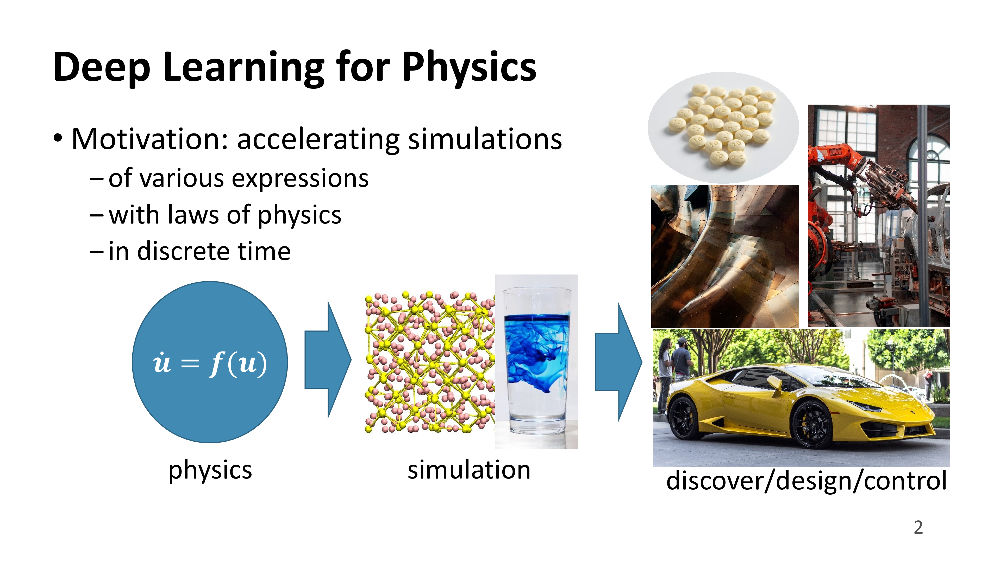
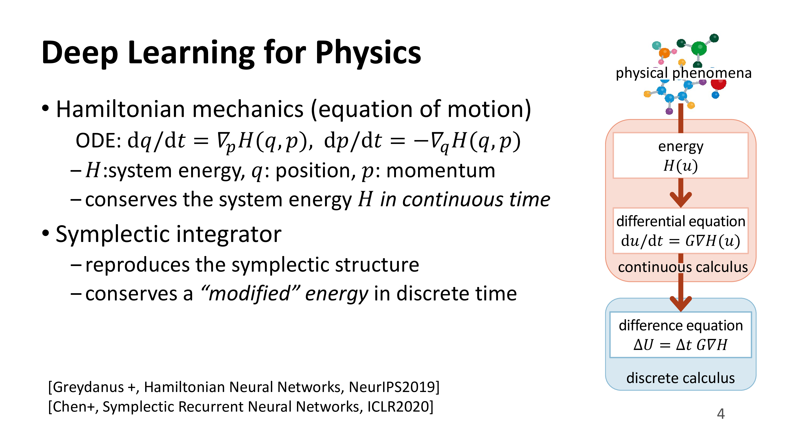
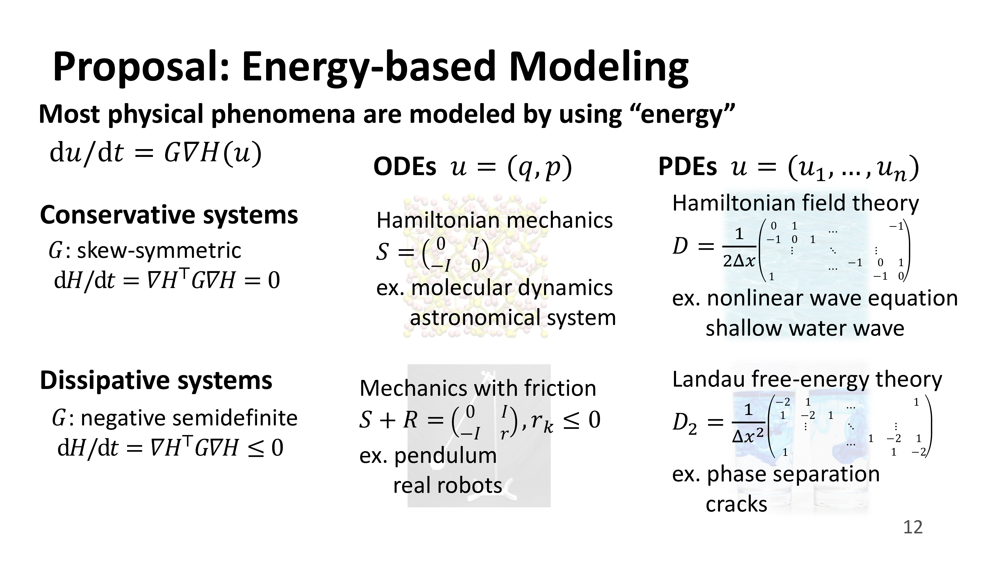
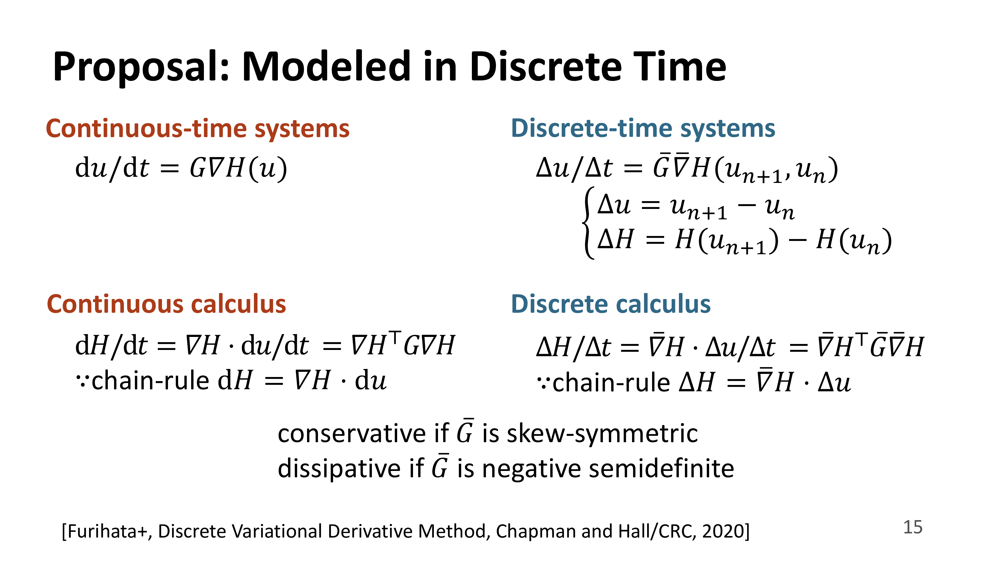
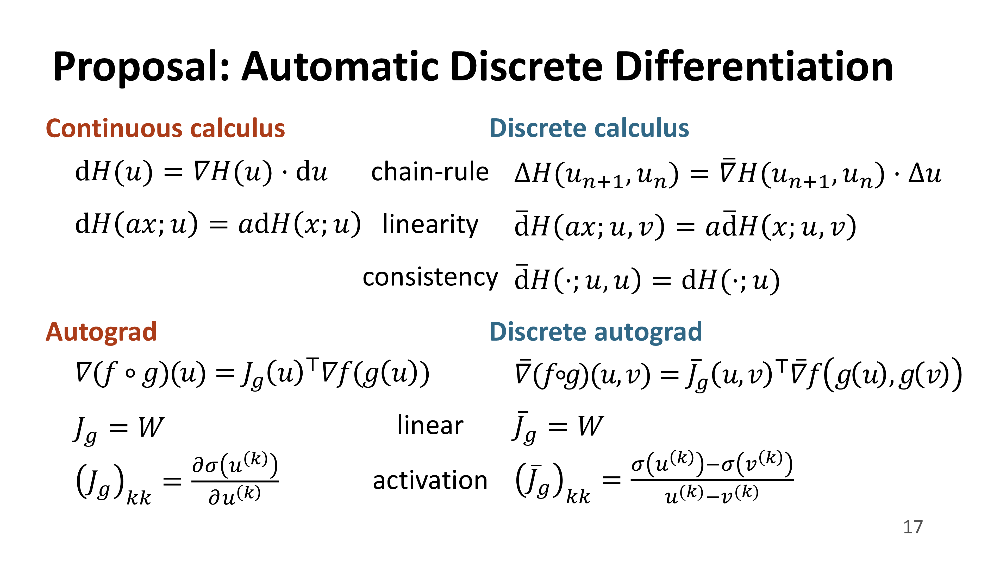
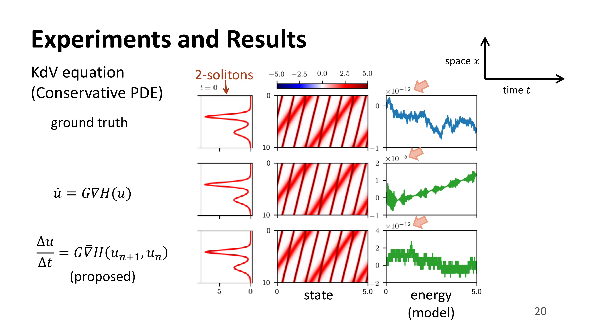
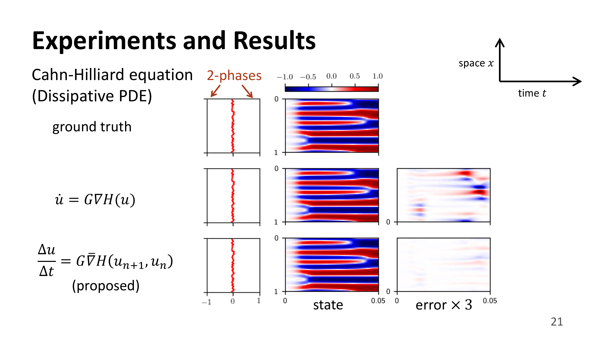
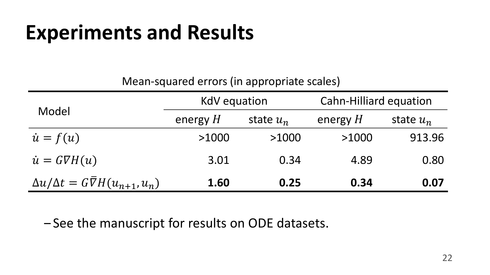

<!-- page-main -->
<section id="page-main" class="padding-small">
  <div class="container">
    <p class="text-primary"><small>AI for Science - 科学技術機械学習</small></p>
    <h2>自動離散微分を用いたエネルギー保存則・散逸則を満たす深層物理シミュレーション</h2>
    <p>機械学習で物理現象をモデル化することは，高速なシミュレーションや未知の現象の発見などに繋がると期待されています．しかし離散時間で行われるシミュレーションでは，エネルギー保存則・散逸則といった物理法則が成り立たず，結果が信頼できなかったり，シミュレーションが破綻したりします．これを回避するため，離散勾配と呼ばれる数値積分の一種が研究されてきましたが，手動での式変形が必要であり，機械学習に適応することは困難でした．</p>
    <p>本発表は自動離散微分という新たなアルゴリズムを提案します．これによって深層学習でデータから対象のダイナミクスを学習し，エネルギーの保存則・散逸則を厳密に保つシミュレーションを行うことが可能になりました．データから学習できるということは，詳細なメカニズムや方程式が未解明の物理現象（波の伝播や結晶構造の成長など）を高い精度でモデル化し，シミュレーションすることが可能になると期待できます．</p>
    <p><a href="https://github.com/tksmatsubara/discrete-autograd" target="_blank">ソースコード公開中．</a></p>
    <p><a href="https://www.dropbox.com/s/flf4wepli2ad7ub/112_%E6%9D%BE%E5%8E%9F%E5%B4%87.mp4?dl=0" target="_blank">IBISワークショップで発表した動画はこちら．</a></p>
    <ul>
      <li>Takashi Matsubara, Ai Ishikawa, and Takaharu Yaguchi, &ldquo;Deep Energy-Based Modeling of Discrete-Time Physics,&rdquo; <em>Advances in Neural Information Processing Systems (NeurIPS)</em>, 2020. (oral 105/9454=1.1%) (<a href="https://neurips.cc/Conferences/2020/Schedule?showEvent=17224">link</a>) (<a href="https://arxiv.org/abs/1905.08604">arXiv</a>)</li>
    </ul>
    <div class="row">
      <div class="col-md-10 offset-md-1">
        
        
        
        
        
        
        
        
        
      </div>
    </div>
  </div>
</section>
